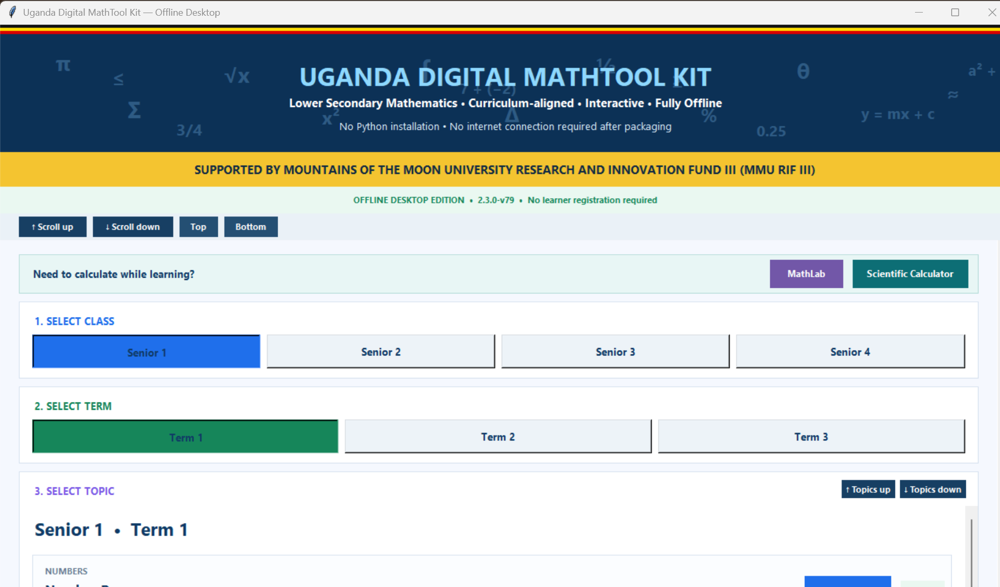
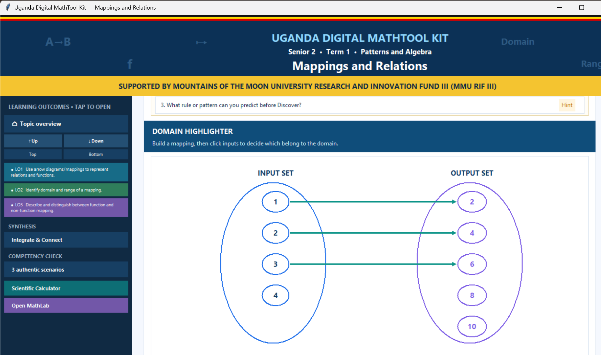
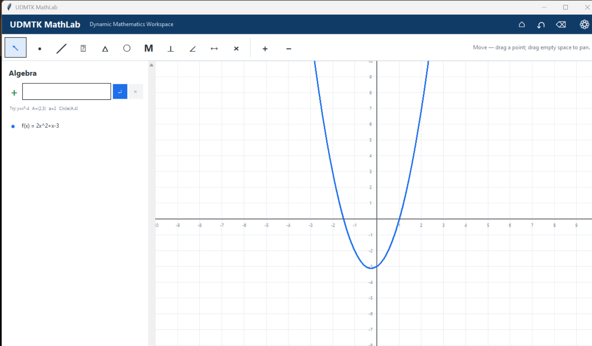
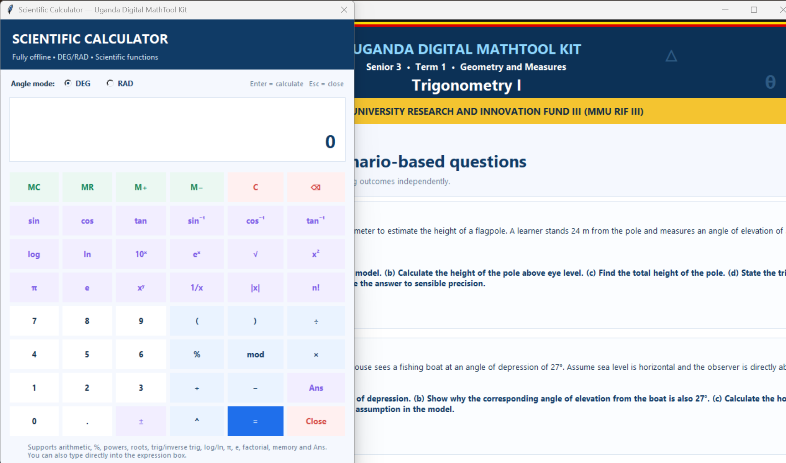

Uganda Digital MathTool Kit supports Uganda's competency-based lower secondary mathematics curriculum from Senior 1 to Senior 4 through interactive learning activities, dynamic mathematical tools and curriculum-aligned practice.
Works offline after installation • No Python installation required
UDMTK combines curriculum navigation, learner manipulation, competency-based activities and general mathematical tools in one offline Windows application.
Curriculum content organised by class, term, topic and learning outcome.
Explore, Discover, Practice and Apply activities encourage active engagement with mathematical ideas.
A dynamic workspace for graphs, coordinates, geometry, constructions, measurements and mathematical objects.
An integrated calculator supports arithmetic, powers, roots, logarithms and trigonometric calculations.
Contextual tasks encourage interpretation, modelling, reasoning and application.
Normal learning use does not require internet access after installation.
Actual screenshots from the Windows desktop application.




Manipulate mathematical objects, test ideas, receive feedback, practise procedures, interpret results and use MathLab when a graph or construction is needed.
Use UDMTK to support demonstrations, guided discovery, learner practice, competency-based activities, revision and classroom discussion without depending on continuous internet access.
The public Windows release is a 30-day trial. The installer has been packaged so users do not need Python.
Download Windows Installer — 30-Day TrialUDMTK_v1.0_Setup.exe.Uganda Digital MathTool Kit is supported by the Mountains of the Moon University Research and Innovation Fund III (MMU RIF III).
Support: Dr. Issa Ndungo • 0776428589